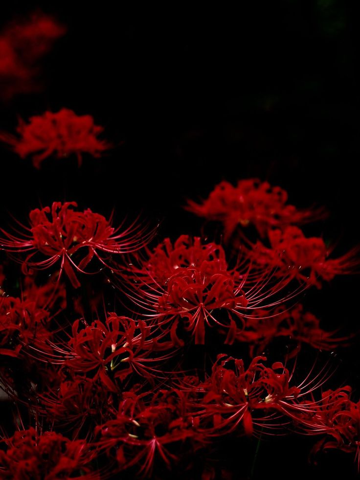
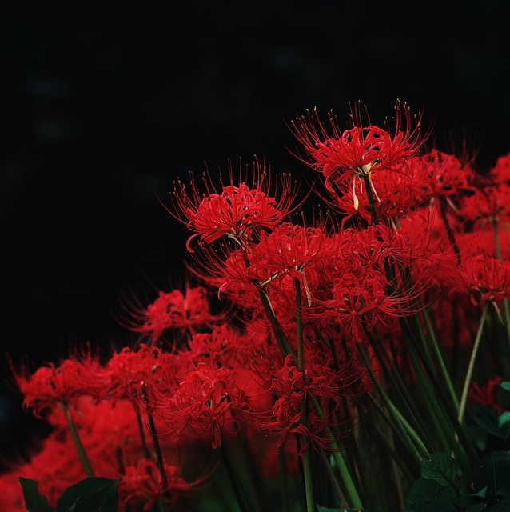
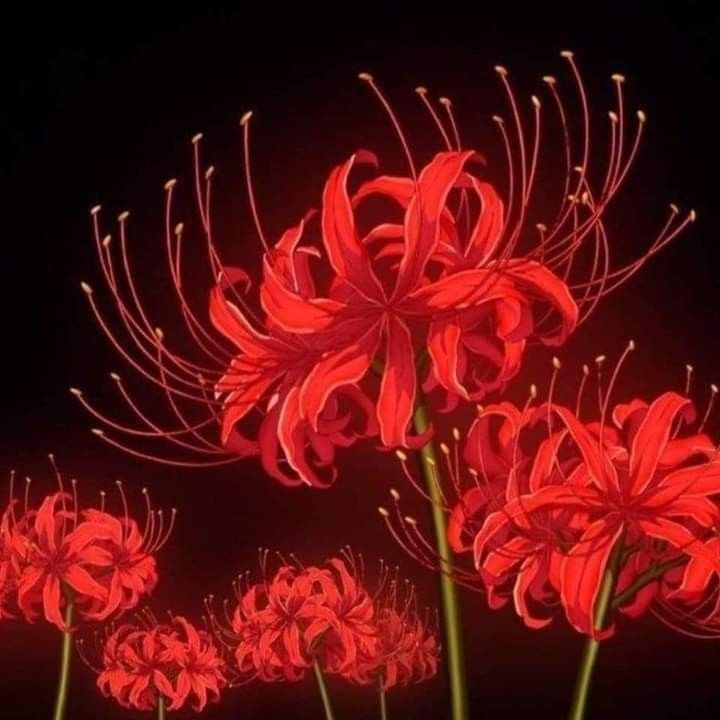
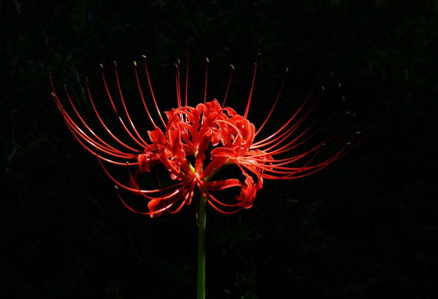

The Myth Behind Lycoris Radiata
Lycoris Radiata is often surrounded by myths and folklore. In various cultures, it is viewed as a flower that symbolizes separation and the afterlife. Its appearance is often associated with both love and longing, making it a symbol of spiritual connections beyond the physical world.
The Growing Season of Lycoris Radiata

Lycoris Radiata is known for its seasonal growth cycle. While the flowers bloom after the leaves have withered, the plant requires specific conditions to thrive. Proper care involves understanding its needs for light, temperature, and soil to ensure the best flowering results.
The Spider Lily in Culture

The Spider Lily holds deep cultural significance in several traditions. It is often associated with spiritual journeys and is thought to guide the souls of the departed. The flower's unique appearance and symbolism make it a powerful representation of life, death, and the connections between them.
Lycoris Radiata and Its Medicinal Uses

Lycoris Radiata has a long history of medicinal use, particularly in traditional Eastern medicine. While its raw bulbs are toxic, they are processed in various ways to extract compounds used to treat ailments such as pain and inflammation. It is important to approach these uses with caution due to the flower's toxicity in its natural state.
Varieties of Lycoris Radiata

There are several varieties of Lycoris Radiata, each with subtle differences in flower color and size. While the most common variety is a vibrant red, there are also rarer variations, such as white and yellow Spider Lilies, each adding a unique touch to gardens and landscapes.